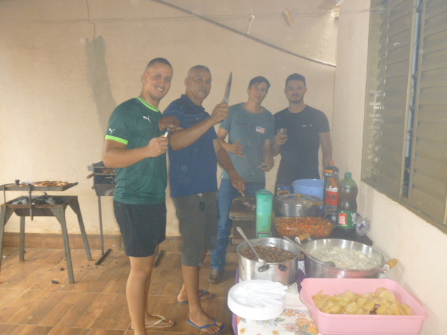
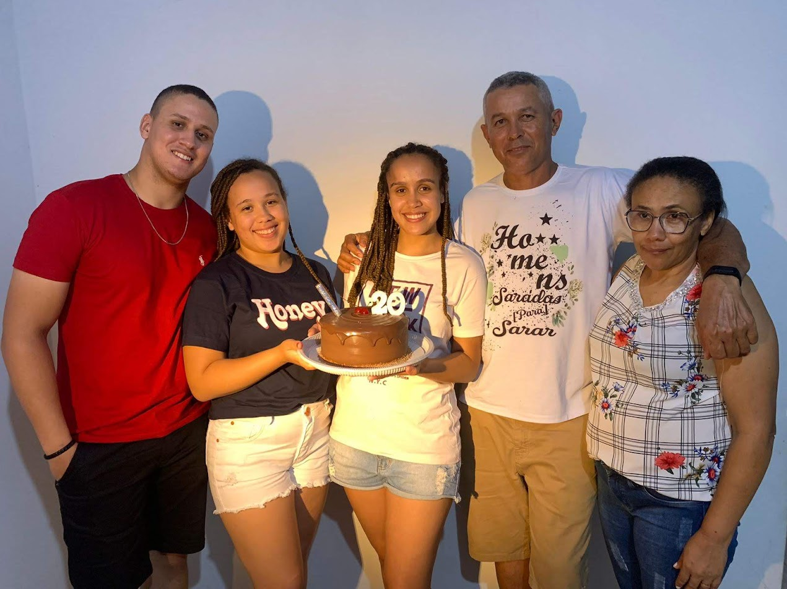
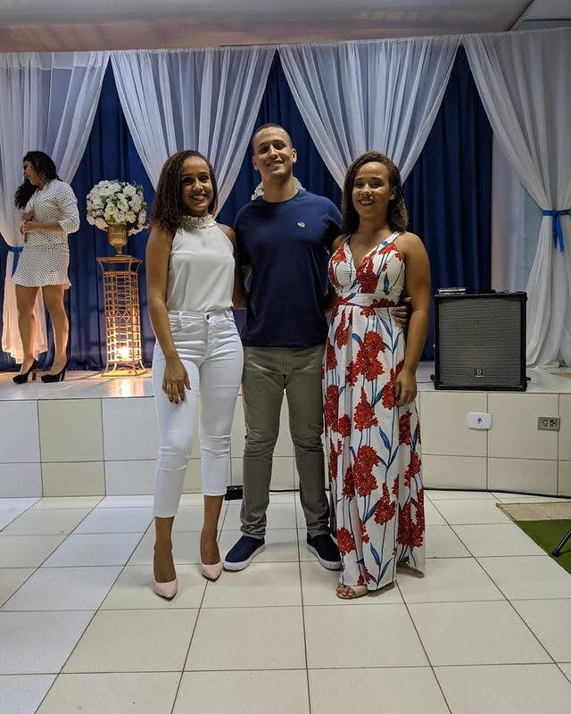
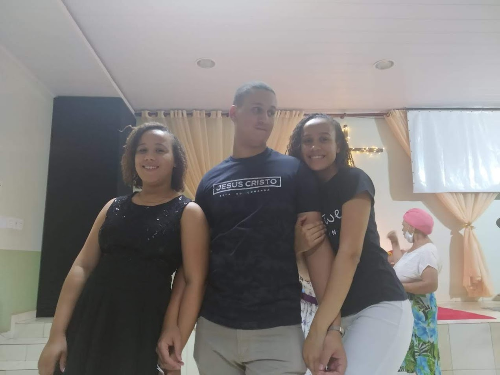
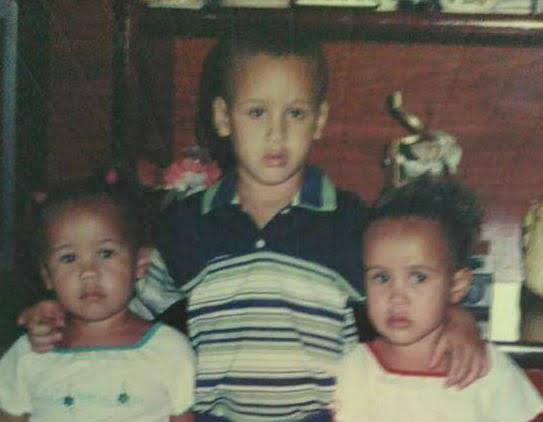
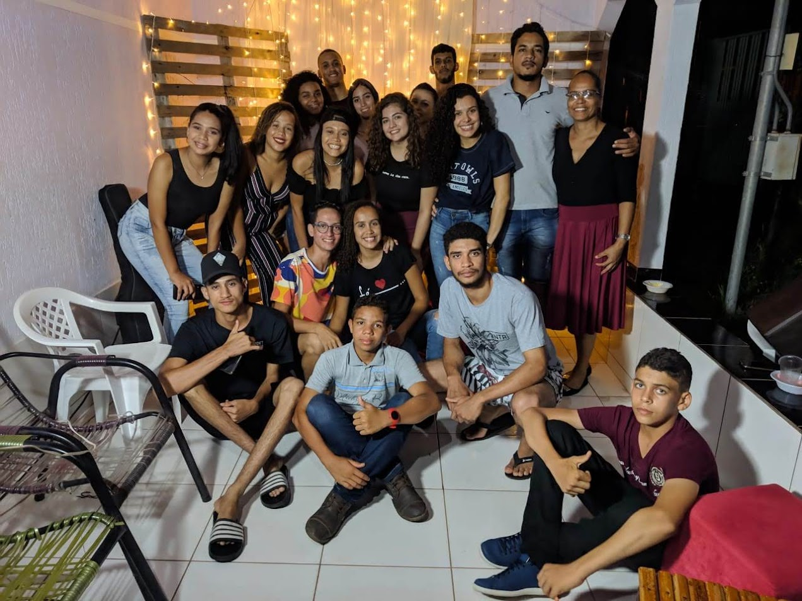

Lusquinha
Desde pequenos, sempre fomos muito unidos — crescemos lado a lado, assistindo Dragon Ball como se fosse a coisa mais séria do mundo
E quando não estávamos na frente da TV, estávamos curtindo nossas músicas eletrônicas, criando nosso próprio universo cheio de som e risadas
Claro que a gente briga de vez em quando, mas nenhuma discussão muda o carinho imenso que sinto por ele.
Ele é mais que meu irmão — é meu amigo, meu companheiro de tantas memórias boas e alguém que carrego no coração todos os dias. A nossa conexão é única, construída com infância, zoeiras, cumplicidade e amor verdadeiro
Momentos com Lucas 📸





